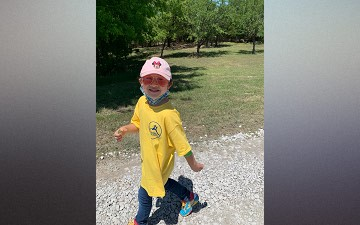
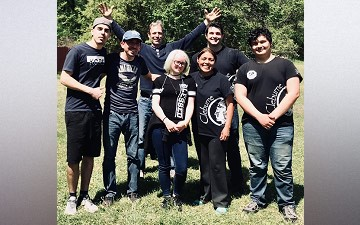
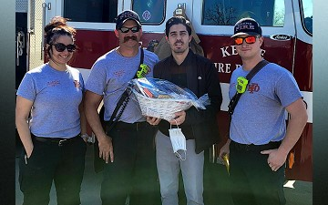
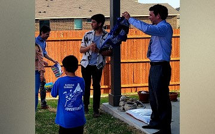
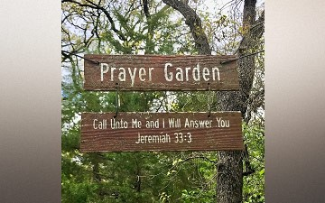

Pathfinders
One of the greatest experiences God has given to people is the oppurtunity to watch our young ones grow. Pathfinders is a special experience where young people have the oppurtunity to connect, grow, and choose Christ for the rest of their lives. It's by far one of my favorite programs offered by the church.

Masterguides
Just as amazing as Pathfinders is the Masterguides program. This a great place for like minded outdoors people to connect and grow together. I'm priveleged to have been an honorary Masterguide and look forward to making it official.
Preaching
I live to serve and am greatly honored when I'm invited to preach. Being able to participate with Christ in the sharing of His word is a great mystery that I hope to always be passionate about.

Community
Christianity is a community experience. It's a joy when we are able to promote a healthier community by appreciating those who serve.

Fellowship
The most wonderful thing about being involved in ministry is the lifelong friendships that are developed along the way. I look forwards to seeing each person I've connected with along the way in heaven.

Outreach
Sharing the gospel message to anyone who is willing to listen is a great experience that keeps my faith alive. Even when I'm working against the odds, it's amazing to see how God can lead us to the right people at exactly the right time.
{kind=link}
{kind=link}
{kind=link}
{kind=link}
{kind=link}
{kind=link}